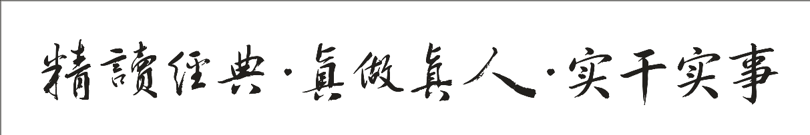
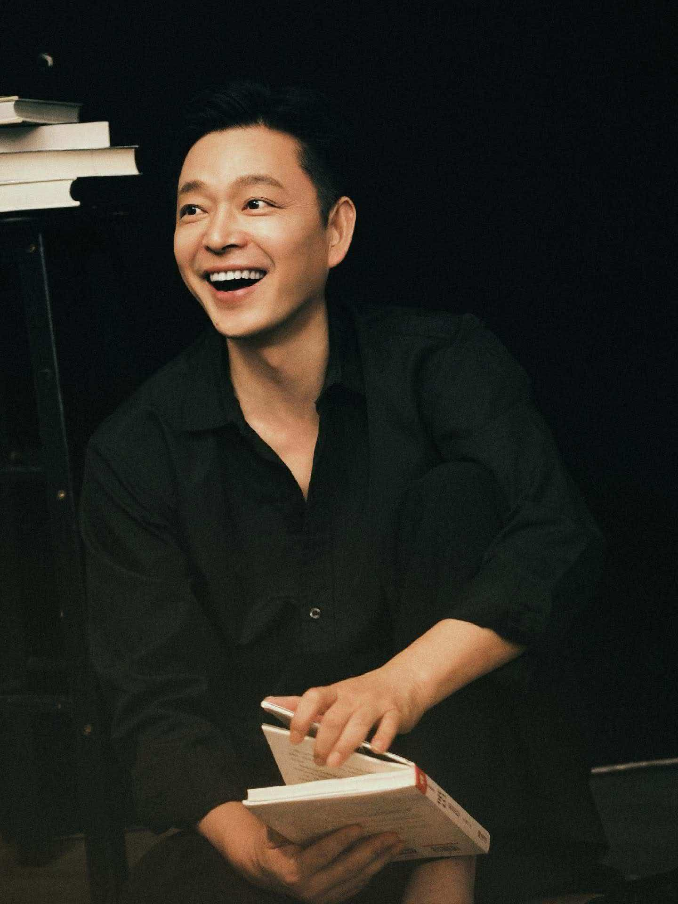
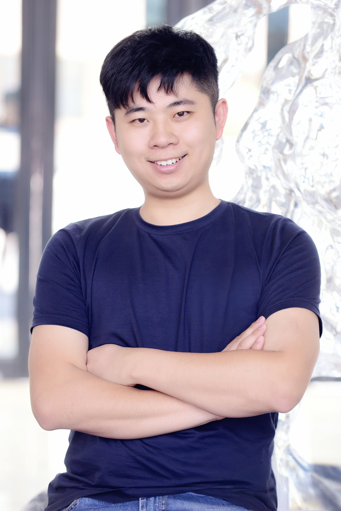

九經書院 Jiujing Academy
通中西智慧之九经，立觉智圆成之体，行弘扬治理之用。
于典籍之中，见天地、见众生、见自己。
通中西智慧之九經，立覺智圓成之體，行弘傳治理之用。
於典籍之中，見天地、見眾生、見自己。
Comprehending the Nine Standards of Chinese and Western wisdom; establishing the substance of consummate awakened wisdom; enacting the function through teaching and governance.
Within the classics — see Heaven and Earth, see all beings, see yourself.
「凡为天下国家有九经，曰：修身也，尊贤也，亲亲也，敬大臣也，体群臣也，子庶民也，来百工也，柔远人也，怀诸侯也。」「凡為天下國家有九經，曰：修身也，尊賢也，親親也，敬大臣也，體群臣也，子庶民也，來百工也，柔遠人也，懷諸侯也。」"In governing the world and the state there are Nine Standards: cultivating the self; honoring the worthy; cherishing one's kin; respecting great ministers; identifying with the body of officials; treating the common people as one's own children; attracting the artisans; showing tenderness to strangers from afar; and cherishing the feudal lords."
——《中庸》第二十章——《中庸》第二十章— The Doctrine of the Mean, Chapter 20

儒 · 释 · 道 九经儒 · 釋 · 道 九經The Nine Classics
三教九经，各三部而成一体。由入世之学而心性之觉，而返于自然之道。三教九經，各三部而成一體。由入世之學而心性之覺，而返於自然之道。Three teachings, nine classics — three works each, forming one whole. From worldly learning to the awakening of mind-nature, returning to the Dao of nature.
体 · 用 不二體 · 用 不二Substance & Function — Not Two
立一家觉智哲学之理论，为体；弘扬于世、致用于治理，为用。体用相生，学问乃活。立一家覺智哲學之理論，為體；弘傳於世、致用於治理，為用。體用相生，學問乃活。To establish a theory of awakened-wisdom philosophy is the substance; to spread it in the world and apply it in governance is the function. Substance and function beget each other — thus learning lives.
奠基立体奠基立體Theoretical Construction
奠基于中国体知—工夫之文明范式，融通西方认知—技术之文明成就，于觉知与认知的统一处，建构关于生命觉醒与实践、宇宙运化与开展的完整理论。奠基於中國體知—工夫之文明範式，融通西方認知—技術之文明成就，於覺知與認知的統一處，建構關於生命覺醒與實踐、宇宙運化與開展的完整理論。Rooted in the Nine Classics, integrating the theories of mind-nature, realms and cultivation across the three teachings; at the unity of "awareness" and "cognition," it builds a complete theoretical system of awakened-wisdom philosophy — a Chinese articulation of awakening, wisdom and the practice of life.
弘扬传播 · 经世致用弘揚傳播 · 經世致用Dissemination & Practical Application
将觉智哲学落地于当代——修身、正心、治业，三者同治。上达于面向大众的弘扬传播，下贯于面向组织的「超级管理学」（见下文）。將覺智哲學落地於當代——修身、正心、治業，三者同治。上達於面向大眾的弘揚傳播，下貫於面向組織的「超級管理學」（見下文）。Grounding awakened-wisdom philosophy in the present — cultivating body, rectifying mind, ordering the enterprise, the three governed as one. Upward to public dissemination, downward through organizational "Super-Management" (below).
反思（一阶最高态）≠ 返思（二阶最高态）。心之二阶机制可摹，觉之二阶实现不可摹——结穴于「吾心光明」。反思（一階最高態）≠ 返思（二階最高態）。心之二階機制可摹，覺之二階實現不可摹——結穴於「吾心光明」。Reflection (the highest first-order state) ≠ Re-flection (the highest second-order state). The mind's second-order mechanism can be modeled; awareness's second-order realization cannot — it culminates in "my mind is luminous."
「之间」的功夫
在关系之中成人成己「之間」的功夫
在關係之中成人成己The Work of the "In-Between":
Becoming Oneself Within Relationship
情之为物，最近人心，亦最考人心。以觉智之眼，观亲密、观欲望、观执着与放下——由情而入道，于爱中修行，成就成熟而自由的关系。情之為物，最近人心，亦最考人心。以覺智之眼，觀親密、觀慾望、觀執著與放下——由情而入道，於愛中修行，成就成熟而自由的關係。Emotion lies closest to the human heart, and tests it most. With the eye of awakened wisdom, observe intimacy, desire, attachment and letting-go — enter the Dao through feeling, cultivate within love, and realize relationships that are mature and free.
一文一世界 一字一文明一文一世界 一字一文明One Character, One World · One Word, One Civilization
从童蒙开始，以哲思启慧，以汉字为钥——解码文明的基因，让孩子在方块字中遇见天地与本心。從童蒙開始，以哲思啟慧，以漢字為鑰——解碼文明的基因，讓孩子在方塊字中遇見天地與本心。Beginning in childhood — awakening wisdom through philosophy, with Hanzi as the key — decoding the genome of civilization, letting children meet Heaven, Earth and their own heart within the square characters.
汉字哲学启蒙漢字哲學啟蒙Hanzi Philosophy for Children
以孩子听得懂的方式追问世界：何为善恶？何为真假？何为我与他人？在提问与对话中，养成独立思考与慈悲之心。以孩子聽得懂的方式追問世界：何為善惡？何為真假？何為我與他人？在提問與對話中，養成獨立思考與慈悲之心。Questioning the world in ways children understand: What is good and evil? What is true and false? What is self and other? Through inquiry and dialogue, cultivate independent thought and a compassionate heart.
进入文字探索進入文字探索Open the Hanzi Explorer→汉字文明编码系统漢字文明編碼系統Hanzi Civilizational Encoding System
将汉字视为一套文明的编码——形、音、义、源，层层解构。由字入文，由文入道，重建母语者与文明本源的连接。將漢字視為一套文明的編碼——形、音、義、源，層層解構。由字入文，由文入道，重建母語者與文明本源的連接。Treating Hanzi as a code of civilization — form, sound, meaning, origin — deconstructed layer by layer. From character to text, from text to Dao, rebuilding the bond between native speakers and the source of their civilization.
以觉智存世
以修身为本以覺智存世
以修身為本Sustaining the World with Awakened Wisdom:
Rooted in Cultivating the Self
觉智哲学之「用」，落于组织即「超级管理学」——不止于制度与效率，更求人心之治、境界之提。以东方智慧重塑领导力、决策与治理之道，使管理成为修行，使组织成为道场。覺智哲學之「用」，落於組織即「超級管理學」——不止於制度與效率，更求人心之治、境界之提。以東方智慧重塑領導力、決策與治理之道，使管理成為修行，使組織成為道場。The "function" of awakened-wisdom philosophy, applied to organizations, is "Super-Management" — beyond systems and efficiency, it seeks the governance of the human heart and the elevation of one's realm. Reshaping leadership, decision-making and governance with Eastern wisdom — making management a practice, and the organization a place of cultivation.
{{ g.noteZh }}{{ g.noteHant }}{{ g.noteEn }}
企业·家 陪伴成长计划企業·家 陪伴成長計劃Enterprise & Family — Companioned-Growth Program
超级管理学的长程落地——不是一次讲座，而是一段陪伴。以觉智哲学为根，为企业与家庭提供长程的成长方案：修一人之心，正一家之风，理一企之治。超級管理學的長程落地——不是一次講座，而是一段陪伴。以覺智哲學為根，為企業與家庭提供長程的成長方案：修一人之心，正一家之風，理一企之治。The long-term grounding of Super-Management — not a single lecture but a companionship. Rooted in awakened-wisdom philosophy, it offers enterprises and families a long-range path of growth: cultivate one heart, rectify one family's ethos, order one enterprise's governance.
{{ p.zh }}{{ p.hant }}{{ p.en }}
{{ p.noteZh }}{{ p.noteHant }}{{ p.noteEn }}

胡 勇胡 勇Hu Yong
觉智哲学的理论建构者，九经书院的创办人与主讲。以哲学为业，以觉智为志——会通中西、贯穿古今，于 AI 时代重探中国心性之学。覺智哲學的理論建構者，九經書院的創辦人與主講。以哲學為業，以覺智為志——會通中西、貫穿古今，於 AI 時代重探中國心性之學。The theoretical architect of awakened-wisdom philosophy, and the founder and principal lecturer of Jiujing Academy. Philosophy as vocation, awakened wisdom as aspiration — integrating East and West, threading past and present, re-exploring the Chinese learning of mind-nature in the age of AI.

黄智威黃智威Huang Zhiwei
九经书院CEO，负责书院运营、课程体系管理、文化交流与对外合作。秉承「觉智圆成·体用不二」的理念，致力于将东方智慧与现代实践相融合，推动经典文化的当代传播与创新。九經書院CEO，負責書院運營、課程體系管理、文化交流與對外合作。秉承「覺智圓成·體用不二」的理念，致力於將東方智慧與現代實踐相融合，推動經典文化的當代傳播與創新。CEO of Jiujing Academy, responsible for operations, curriculum management, cultural exchange and external cooperation. Upholding the philosophy of 'Consummate Awakened Wisdom · Substance and Function as One,' he is dedicated to integrating Eastern wisdom with modern practice.
与九经书院同行與九經書院同行Walk with Jiujing Academy
无论你为求学、为修心、为齐家、为治企——这里都有一条由典籍通往觉醒的路。無論你為求學、為修心、為齊家、為治企——這裡都有一條由典籍通往覺醒的路。Whether you come to study, to cultivate the mind, to order a family, or to govern an enterprise — here lies a path from the classics to awakening.
预约报名預約報名Reserve a Place